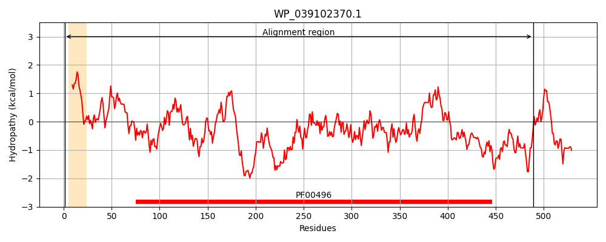
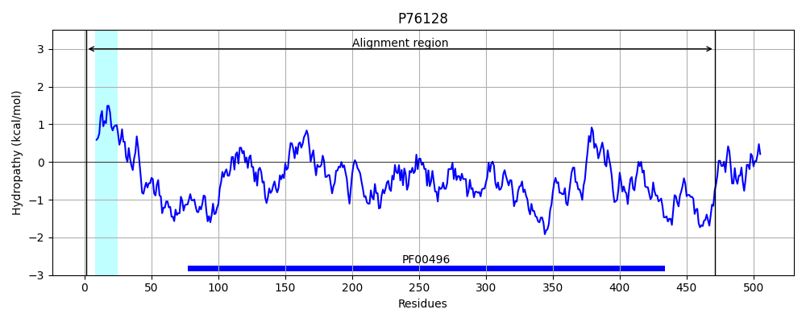
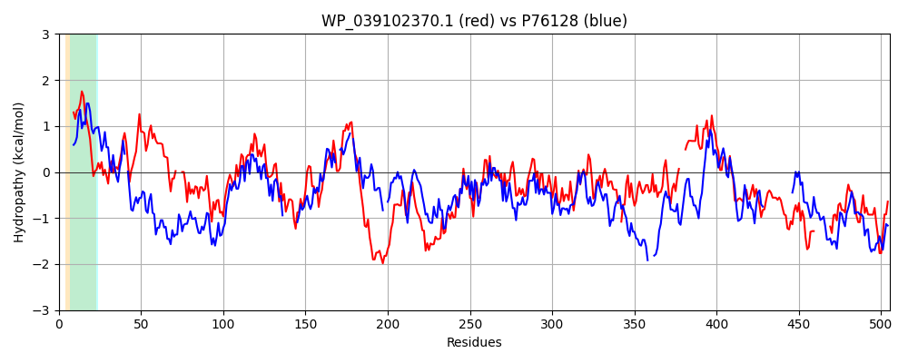

Hit Accession: P76128
Hit TCID: 3.A.1.5.38
Hit Description: gnl|BL_ORD_ID|11440 gnl|TC-DB|P76128|3.A.1.5.38 Probable D,D-dipeptide-binding periplasmic protein DdpA OS=Escherichia coli (strain K12) GN=ddpA PE=2 SV=1
Mach Len: 505
e:0.000000
Query TMS Count : 1
Hit TMS Count: 1
TMS-Overlap Score: 0.850000
Predicted Substrates:CHEBI:72816;L-alanyl-L-alanine
BLAST Alignment:
Score: 392 , Bit scores: 155 bits, E-value: 2.3e-41, Alignment length: 505, Percentage identity: 27
Query: 1 MKKTSLLAACILALAMSMGSGEAVAKTPPDQLIIGMNMNNLLTLDPAAMTGNEVVGIVVNLYDSLVELDPEQ---LTTVKPALAKSWDISPDGKTLTFHLRDDVKFHSGNLLTAADVVWSMRRILHLNLAQASVWKSYGFSKKNIDSQVSAPDRFTVQIVLPKDNDPQLVIYSLAALGNLGVLDSKTVQSHQQDNDWGNRWLTTHEAGSGPFTLETWQAKEVLRMKRNPDYWRGEAKMSRVVLRHFQESQTLRLMIEKGDLDIANNMAVSDINALRSDPQLTVDAVQRGTMYYVAMSMKEAHFANPKVREAVRYLIDYQGINKALMPGYGVLHQRPIKAGM-PSTLPDPGYKLDVARAKKLLAEAGYPNGFDTTLRVL---SDQPFLNIAIAVQSTLMQAGINAKIITGTGNQIYGAMRERKFDLLVGRGGSGMEPHPHSSLRALVYNPDNSDKARLTNF---------QGWRTGFYDPQLNTMIDQALLERDPQKQVADYQAIQ 489
MK++ +LAL ++ A A P D L+IG + TLDPA N + Y LV+ + T V+ LA SW S D K TF L+D+ KF G +TA V S R+L + A + D ++ APD TV+ L + P L Y+LA G +++ ++ H D+ G +L + AGSGPF L++WQ + L + NP Y + RV ++ ES + RL + +GD+DIA+ + V +NAL+ + ++ V + Y+ ++ +A +R A+ + DYQG+ ++ G G + PI GM Y D +AK AE T+L L +D + IA+A QS+L + GI K+ + + + +D+ +G ++PD +D N+ G R+ + + +++ ++ AL D ++ DYQ Q
Sbjct: 1 MKRSISFRPTLLALVLATNFPVAHAAVPKDMLVIGKAADPQ-TLDPAVTIDNNDWTVTYPSYQRLVQYKTDGDKGSTDVEGDLASSWKASDDQKEWTFTLKDNAKFADGTPVTAEAVKLSFERLLKIGQGPAEAFPK--------DLKIDAPDEHTVKFTLSQPFAPFL--YTLANDG-ASIINPAVLKEHAADDARG--FLAQNTAGSGPFMLKSWQKGQQLVLVPNPHYPGNKPNFKRVSVKIIGESASRRLQLSRGDIDIADALPVDQLNALKQENKVNVAEYPSLRVTYLYLNNSKAPLNQADLRRAISWSTDYQGMVNGILSGNGKQMRGPIPEGMWGYDATAMQYNHDETKAK---AEWDKVTSKPTSLTFLYSDNDPNWEPIALATQSSLNKLGIIVKLEKLANATMRDRVGKGDYDIAIGN-----------------WSPDFADPYMFMNYWFESDKKGLPGNRSFYENSEVDKLLRNALATTDQTQRTRDYQQAQ 471 | Protein Hydropathy Plots: |
|---|
|  |  |
Pairwise Alignment-Hydropathy Plot:
|
|---|
|  |